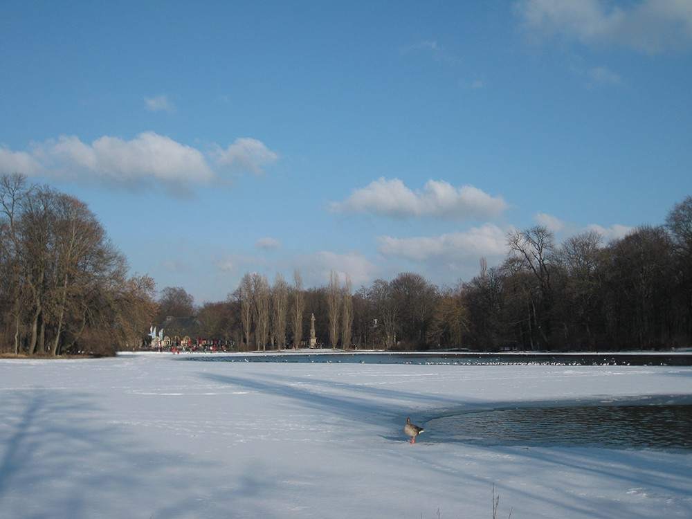

<!DOCTYPE html>
<html lang="en">
<head>
    <title></title>
    <meta charset="UTF-8">
    <meta name="viewport" content="width=device-width, initial-scale=1">
    <script src="./util/fabric.js"></script>
</head>
<body>
<canvas id="c" width="800" height="1000"></canvas>
<!---->
</body>
<script src="https://cdn.bootcss.com/jquery/3.3.1/jquery.min.js"></script>
<script type="text/javascript">
    console.log(fabric);
    var canvas =new fabric.Canvas('c'); //利用fabric找到我们的画布


    //矩形
    function rect(){
        var rect = new fabric.Rect({  //创建我们的正方形
            width:100,//
            height:50,//
            fill:'#ccc',//填充颜色
            left:200,//距离画布左侧的距离，单位是像素,
            stroke:"black",  //边框
            strokeTop:"red",  //边框
            strokeWidth:5,   //边框颜色
            selectable:false,
            top:200//距离画布上边的距离
        });
        canvas.add(rect);//把我们创建好的正方形加到画布上
    }

    //圆形
    function circle(){
        var circle = new fabric.Circle({
            radius:100,//
            fill:'#ccc',//填充颜色
            left:400,//距离画布左侧的距离，单位是像素,
            top:400,//距离画布上边的距离
            stroke:"red",  //边框
        });
        circle.setGradient('fill',{ //渐变
            x1:0,
            y1:0,
            x2:0,
            y2:circle.height,
            colorStops:{
                0:"green",
                0.5:"black",
                1:"red"
            }
        })
        canvas.add(circle);//把我们创建好的正方形加到画布上
    }

    fabric.Image.fromURL('./img/kt.png', function(oImg) {
        // canvas.add(oImg);
    });
    fabric.Image.fromURL('./img/jx.jpg',function(oImg) {

        console.log(oImg);
        // scale image down, and flip it, before adding it onto canvas
        // oImg.scale(0.5).set("flipX, true");`
        // oImg.cacheWidth=200;
        // oImg.cacheHeight=500;
        a = oImg;
        oImg.width = 300;
        oImg.height = 300;
        scaleX:100,
        oImg.left = 500;
        oImg.top = 500;
        canvas.add(oImg);
        oImg.angle = 10;

        //设置为当前选中
        canvas.setActiveObject(oImg);


    });
    // rect.animate('angle',45,{
    //     onChange:canvas.renderAll.bind(canvas)
    // });
    //获取当前选中对象
    var act_obj = canvas.getActiveObject();
    console.log(act_obj);

    //去白底过滤器
    // $("#remove-white").click(function (){
    //     applyFilter(1, this.checked && new fabric.Image.filters.RemoveWhite({
    //         threshold: 60,
    //         distance: 60
    //     }));
    //
    // })

    var imgElement = document.getElementById('img');//声明我们的图片
    var imgInstance = new fabric.Image(imgElement, {
        left: 100,
        top: 100,
        // angle: 30,
        opacity: 0.85
    });
    // canvas.add(imgInstance);
    //不规则图形
    var path = new fabric.Path('M 200 250 L 190 100 L 200 100 z');
    var paths = new fabric.Path('M 190 250 L 190 100 L 200 100 z');
    // var paths = new fabric.Path('M 150 250 L 150 100 L 210 110 z');
    path.set({
        left: 120,
        top: 120,
        fill:'',
        stroke:"black",  //边框
        strokeWidth:1,   //边框颜色
    });
    paths.set({
        left: 120,
        top: 120,
        fill:'',
        stroke:"black",  //边框
        strokeWidth:1,   //边框颜色
    });
    var group = new fabric.Group([ path, paths ], {

    })
    canvas.add(group);

    var triangle = new fabric.Triangle({
        width: 20, height: 30, fill: 'blue', left: 50, top: 50
    });
    // canvas.add(triangle);

    function applyFilter(index, filter) {
        var obj = canvas.getActiveObject();
        obj.filters[index] = filter;
        obj.applyFilters(canvas.renderAll.bind(canvas));
    }
    var text = new fabric.Text('hello world',{left:100,top:100});
    canvas.add(text);
    //监听事件
    canvas.on({
        //选中
        'object:selected': function(e) {
            console.log("获取焦点");
               // e.e.angle = 40;
            console.log(e);
            console.log(e.target);
            if(e.e){
                // e.target.angle = 40;
                // e.target.animate('angle',e.target.angle-20,{onChange:canvas.renderAll.bind(canvas),duration: 200,})

            }
        },
        //失去焦点
        'selection:cleared': function(e) {
            console.log("失去焦点");
            console.log(e);
            ca = canvas.getActiveObject();
            canvas.remove(ca);
            canvas.renderAll();
        }
    });

    function render(){
        rect();
        circle();
    }
    render();

</script>
</html>